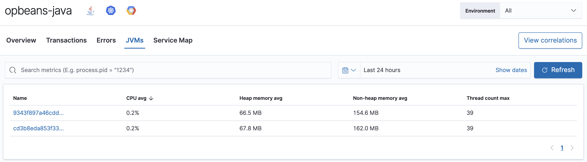
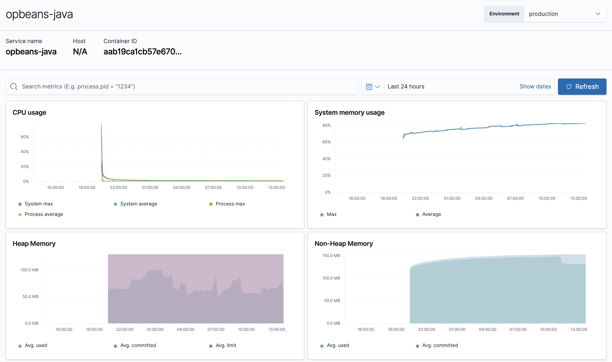

Metrics
editThe Metrics overview provides APM agent-specific metrics, which lets you perform more in-depth root cause analysis investigations within the APM UI.
If you’re experiencing a problem with your service, you can use this page to attempt to find the underlying cause. For example, you might be able to correlate a high number of errors with a long transaction duration, high CPU usage, or a memory leak.

If you’re using the Java APM agent, you can view metrics for each JVM.

Breaking down metrics by JVM makes it much easier to analyze the provided metrics: CPU usage, memory usage, heap or non-heap memory, thread count, garbage collection rate, and garbage collection time spent per minute.
